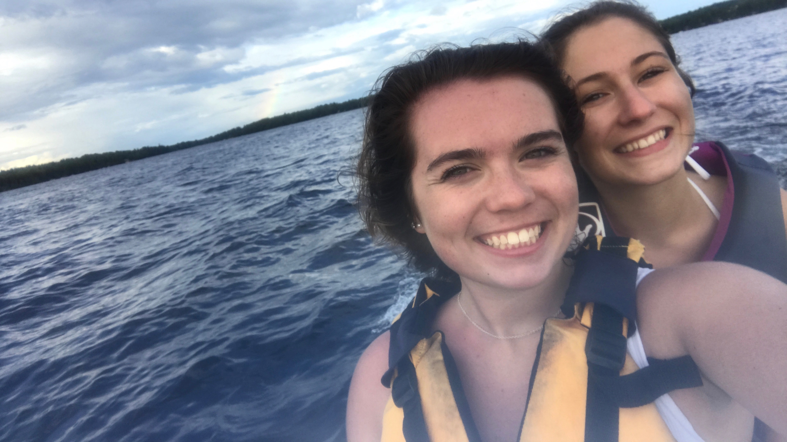

This first picture is me with my parents on Senior Night for field hockey. I walked out to the middle of the field and handed them each a rose and thanked them for the endless years of support they showed for me. It is one of my favorite memories.
This is me and my best friend Maggie, who I mentioned on my homepage. She is my very best friend and I consider her the sister neither of us have. We've gone on countless day trips and taken a vacation to Florida together during our senior year where we made some amazing memories!

One of my best friends is Anna, and she's the greatest person I know. She's caring, kind, and absolutely gorgeous. Her and I met at Accepted Students Day and we instantly became best friends. She's always there when I need her and she can never fail to make me smile. She's my forever friend and I'm eternally grateful for our friendship.

These are a couple of my other friends Alyssa (middle) and Lily (right). We've all been friends since the 6th grade. They know exactly how to cheer me up and are always there for me when I need them. We always have fun when we're together and luckily we all attend UMO, so we never have to go a day without seeing each other. This was our senior prom night where we all had Jennifer Lynn Photography take our photos as a big group and I'm glad I have these photos to look back on.